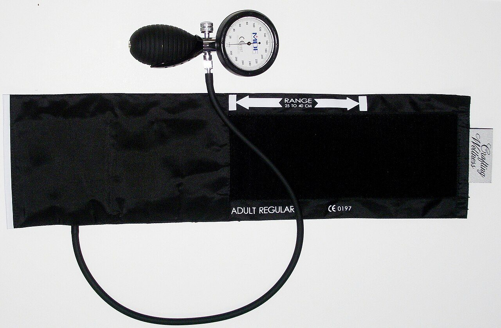

A patient with multiple diseases (comorbidities) Prioritise the life-threatening problem Sepsis (Sepsis-3 qSOFA): RR >= 22, altered mental status, systolic BP <= 100 >= 2 qSOFA criteria -> high risk, urgent assessment Multidisciplinary team